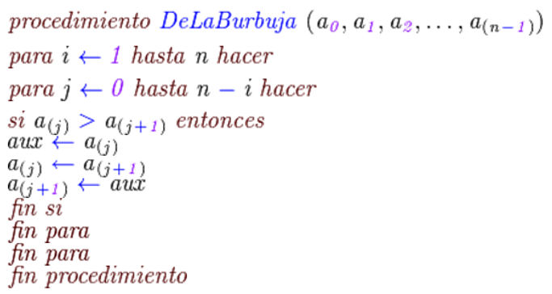

5.1. Algoritmos de ordenamiento internos.
Ordenamiento: Es el acomodar ya sea de forma descendente o ascendente los datos, ya sea de una Lista o de un archivo.
A continuación mencionaremos los diferentes métodos para ordenar:
- Burbuja (Simple, Mejorada y Optimizada)
- ShellSort
- RadixSort (Sorteo de Raíz)
- QuickSort (Sorteo Rápido)
Los algoritmos de ordenamiento se pueden clasificar de las siguientes maneras:
La más común es clasificar según el lugar donde se realice la ordenación
- Algoritmos de ordenamiento interno En la memoria del ordenador.
- Algoritmos de ordenamiento externo En un lugar externo como un disco duro.
Por el tiempo que tardan en realizar la ordenación, dadas entradas ya ordenadas o inversamente ordenadas:
- Algoritmos de ordenación natural Tarda lo mínimo posible cuando la entrada está ordenada.
- Algoritmos de ordenación no natural Tarda lo mínimo posible cuando la entrada está inversamente ordenada.
- Por estabilidad un ordenamiento estable mantiene el orden relativo que tenían originalmente los elementos con claves iguales. Por ejemplo, si una lista ordenada por fecha se reordena en orden alfabético con un algoritmo estable, todos los elementos cuya clave alfabética sea la misma quedarán en orden de fecha. Otro caso sería cuando no interesan las mayúsculas y minúsculas, pero se quiere que si una clave aBC estaba antes que AbC, en el resultado ambas claves aparezcan juntas y en el orden original: aBC, AbC.
Cuando los elementos son indistinguibles (porque cada elemento se ordena por la clave completa) la estabilidad no interesa. Los algoritmos de ordenamiento que no son estables se pueden implementar para que sí lo sean. Una manera de hacer esto es modificar artificialmente la clave de ordenamiento de modo que la posición original en la lista participe del ordenamiento en caso de coincidencia.
Metodo Burbuja
El método de burbuja también se le puede llamar como Método de "intercambio directo". El algoritmo ordena los elementos del arreglo utilizando el método de la burbuja. Transporta en cada pasada el elemento más pequeño hacia la parte de izquierda del arreglo. Este ordenamiento es eficiente sólo en listas pequeñas (10 elementos).El método de burbuja va comparando cada elemento del arreglo con el siguiente; si un elemento es mayor que el que le sigue, entonces se intercambian; esto producirá que en el arreglo quede como su último elemento, el más grande. Este proceso deberá repetirse recorriendo todo el arreglo hasta que no ocurra ningún intercambio. Los elementos que van quedando ordenados ya no se comparan. “Baja el más pesado”. Esté método se basa en el principio de comparar pares de elementos adyacentes intercambiarlos entre sí hasta que estén todos ordenados.

El método de la burbuja es una comparación lineal con cada uno de los elementos, el elemento que sea menor contra el que se está comparado intercambiaran posiciones. Este método no es recomendado para grandes comparaciones, ya que es un proceso muy lento y requiere de una gran cantidad de Memoria RAM.
Metodo QuickSort
El ordenamiento rápido (quicksort en inglés) es un algoritmo creado por el científico británico en computación C. A. R. Hoare basado en la técnica de divide y vencerás, que permite, en promedio, ordenar n elementos en un tiempo proporcional a n log n.
El algoritmo trabaja de la siguiente forma:
- Elegir un elemento de la lista de elementos a ordenar, al que llamaremos pivote.
- Resituar los demás elementos de la lista a cada lado del pivote, de manera que a un lado queden todos los menores que él, y al otro los mayores. Los elementos iguales al pivote pueden ser colocados tanto a su derecha como a su izquierda, dependiendo de la implementación deseada. En este momento, el pivote ocupa exactamente el lugar que le corresponderá en la lista ordenada.
- La lista queda separada en dos sublistas, una formada por los elementos a la izquierda del pivote, y otra por los elementos a su derecha.
- Repetir este proceso de forma recursiva para cada sublista mientras éstas contengan más de un elemento. Una vez terminado este proceso todos los elementos estarán ordenados.
Como se puede suponer, la eficiencia del algoritmo depende de la posición en la que termine el pivote elegido.
- En el mejor caso, el pivote termina en el centro de la lista, dividiéndola en dos sublistas de igual tamaño. En este caso, el orden de complejidad del algoritmo es O(n•log n).
- En el peor caso, el pivote termina en un extremo de la lista. El orden de complejidad del algoritmo es entonces de O(n²). El peor caso dependerá de la implementación del algoritmo, aunque habitualmente ocurre en listas que se encuentran ordenadas, o casi ordenadas. Pero principalmente depende del pivote, si por ejemplo el algoritmo implementado toma como pivote siempre el primer elemento del array, y el array que le pasamos está ordenado, siempre va a generar a su izquierda un array vacío, lo que es ineficiente.